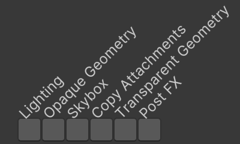
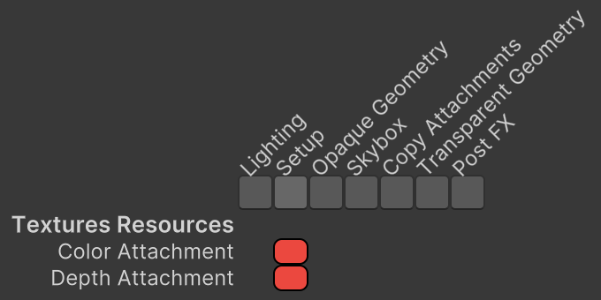
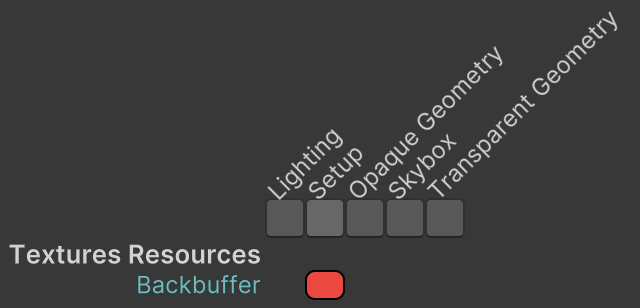
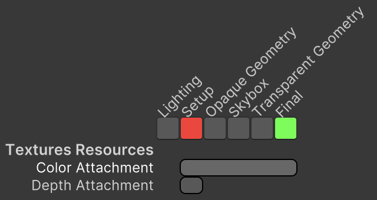
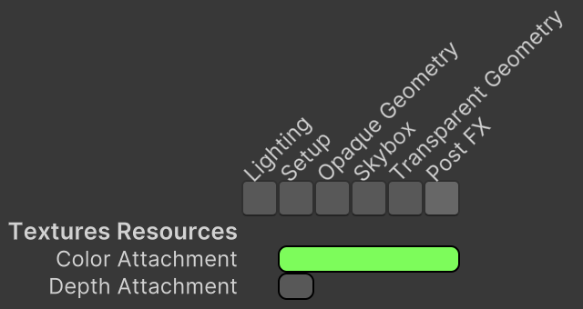
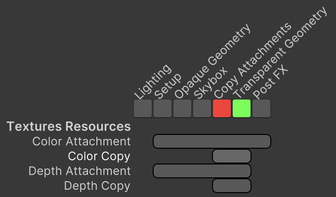
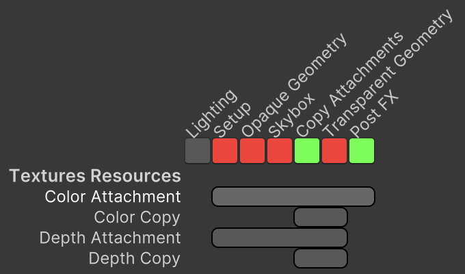
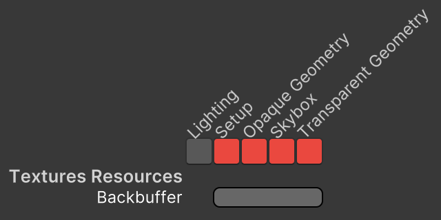

Custom SRP 2.2.0
Camera Textures
- Let the render graph manage camera textures.
- Indicate which passes use the textures.
- Simplify the camera renderer.

This tutorial is made with Unity 2022.3.10f1 and follows Custom SRP 2.1.0.
Texture Handles
In the previous tutorial we used renderer lists to draw geometry, which allowed the render graph to cull passes that had nothing to draw. This time we will do something similar with render textures. We will rely on the render graph to provide and manage texture handles for us, instead of explicitly allocating render textures ourselves. This allows the graph to reuse texture memory when possible and potentially cull more passes.
In this tutorial we'll only convert the camera textures, meaning the color and depth attachments and their copies. The other render textures will be converted in the future.
I am using the Particles scene in this tutorial.
Setup Pass
We are going to move all code for allocating the camera textures from CameraRenderer to SetupPass. To do this it needs fields for whether intermediate attachments are used, the color and depth attachments, the attachment size, camera, and clear flags. As the texture memory will be managed by the render graph we won't hold direct references to the render textures, instead we need TextureHandle structs that act as identifiers for them.
using UnityEngine;
using UnityEngine.Experimental.Rendering;
using UnityEngine.Experimental.Rendering.RenderGraphModule;
using UnityEngine.Rendering;
public class SetupPass
{
static readonly ProfilingSampler sampler = new("Setup");
CameraRenderer renderer;
bool useIntermediateAttachments;
TextureHandle colorAttachment, depthAttachment;
Vector2Int attachmentSize;
Camera camera;
CameraClearFlags clearFlags;
…
}
Add parameters for the required data to Record and copy them to the pass. Also add a parameter to indicate if HDR is used. If intermediate attachments are used make sure that the color gets cleared, as per the logic used in CameraRenderer.Setup.
public static void Record(
RenderGraph renderGraph,
bool useIntermediateAttachments,
bool useHDR,
Vector2Int attachmentSize,
Camera camera,
CameraRenderer renderer)
{
using RenderGraphBuilder builder =
renderGraph.AddRenderPass(sampler.name, out SetupPass pass, sampler);
pass.renderer = renderer;
pass.useIntermediateAttachments = useIntermediateAttachments;
pass.attachmentSize = attachmentSize;
pass.camera = camera;
pass.clearFlags = camera.clearFlags;
if (useIntermediateAttachments)
{
if (pass.clearFlags > CameraClearFlags.Color€)
{
pass.clearFlags = CameraClearFlags.Color€;
}
}
builder.SetRenderFunc<SetupPass>((pass, context) => pass.Render(context));
}
Provide the necessary data when invoking Record in CameraRenderer.Render.
SetupPass.Record( renderGraph, useIntermediateBuffer, useHDR, bufferSize, camera, this);
Creating Textures
We tell the render graph that our pass wants to create textures while building it in Record. This is done by invoking CreateTexture on the render graph with a TextureDesc argument, which gives us a TextureHandle. Do this for the color attachment if needed, passing the attachment size as arguments to the descriptor.
if (pass.clearFlags > CameraClearFlags.Color)
{
pass.clearFlags = CameraClearFlags.Color;
}
var desc = new TextureDesc(attachmentSize.x, attachmentSize.y);
pass.colorAttachment = renderGraph.CreateTexture(desc);
We need to specify the color format via the descriptor, as a GraphicsFormat. We can get the same formats that we used so far by invoking SystemInfo.GetGraphicsFormat for either the default HDR or LDR format.
var desc = new TextureDesc(attachmentSize.x, attachmentSize.y)
{
colorFormat = SystemInfo.GetGraphicsFormat(
useHDR ? DefaultFormat.HDR : DefaultFormat.LDR)
};
Also set the texture's name to Color Attachment. This name will shown up in the render graph viewer and the frame debugger.
colorFormat = SystemInfo.GetGraphicsFormat( useHDR ? DefaultFormat.HDR : DefaultFormat.LDR), name = "Color Attachment"
The render graph will only make the texture available if a pass uses it. The setup pass clears the texture, so only writes to it. We indicate this by passing the handle to the builder's WriteTexture method. It returns the same handle as a convenience.
pass.colorAttachment = builder.WriteTexture(renderGraph.CreateTexture(desc));
Do the same for the depth attachment. We can reuse the descriptor, only settings its depth buffer bits and changing its name. When depth bits are set the color format is ignored.
pass.colorAttachment = builder.WriteTexture(renderGraph.CreateTexture(desc)); desc.depthBufferBits = DepthBits.Depth32; desc.name = "Depth Attachment"; pass.depthAttachment = builder.WriteTexture(renderGraph.CreateTexture(desc));
If we're not using intermediate attachments then we're rendering straight to the camera render target, which is known as the frame or back buffer. We can import this buffer into the render graph by invoking its ImportBackbuffer method with BuiltinRenderTextureType.CameraTarget as an argument, then indicate that we write to it and using its handle for both attachments.
if (useIntermediateAttachments)
{
…
}
else
{
pass.colorAttachment = pass.depthAttachment =
builder.WriteTexture(renderGraph.ImportBackbuffer(
BuiltinRenderTextureType.CameraTarget));
}
At this point Unity will complain that attachments not found. This happens because SetupPass gets culled by the render graph.

This happens because we specified that the pass writes to textures that aren't read by another pass. Thus the graph concludes that the pass is useless and culls it. If a pass writes to imported textures—like the camera target—or if a pass doesn't specify that it writes to anything then the graph doesn't make any assumptions and never culls it.
Because SetupPass is responsible for clearing the render target it should never be culled. We can prevent culling by invoking AllowPassCulling on the builder with false as an argument.
builder.AllowPassCulling(false); builder.SetRenderFunc<SetupPass>((pass, context) => pass.Render(context));
Now the render graph viewer shows the attachments as texture resources and indicates which passes use them. If you hover the cursor over a pass the resources change color based on how they are accessed. If the pass writes to the resources it becomes red. If the pass only reads from the resource it becomes green.

The attachments disappear if they aren't used. This can be temporarily done by disabling color and depth copying and overriding post FX on the main camera. As always you need to press Capture Graph to update the render graph viewer.
To see the back buffer usage, enable Imported Resources in Filters.

Preparing the Render Target
To prepare the correct attachments and make their size data available on the GPU, copy and adjust the relevant code from CameraRenderer.Setup to SetupPass.Render. We can directly pass the attachments to SetRenderTarget as there is an implicit conversion from TextureHandle to RenderTargetIdentifier. The render graph makes sure that the handles represent valid render textures at this point.
static readonly int attachmentSizeID = Shader.PropertyToID("_CameraBufferSize");
…
void Render(RenderGraphContext context) //=> renderer.Setup();
{
context.renderContext.SetupCameraProperties(camera);
CommandBuffer cmd = context.cmd;
if (useIntermediateAttachments)
{
cmd.SetRenderTarget(
colorAttachment,
RenderBufferLoadAction.DontCare, RenderBufferStoreAction.Store,
depthAttachment,
RenderBufferLoadAction.DontCare, RenderBufferStoreAction.Store);
}
cmd.ClearRenderTarget(
clearFlags <= CameraClearFlags.Depth,
clearFlags <= CameraClearFlags.Color,
clearFlags == CameraClearFlags.Color ?
camera.backgroundColor.linear : Color.clear
);
cmd.SetGlobalVector(attachmentSizeID, new Vector4(
1f / attachmentSize.x, 1f / attachmentSize.y,
attachmentSize.x, attachmentSize.y
));
context.renderContext.ExecuteCommandBuffer(cmd);
cmd.Clear();
}
At this moment our render graph will only work when no intermediate attachments are used. We have to adapt our other passes to be compatible with attachments managed by the render graph. But first we clean up SetupPass, removing its reliance on CameraRenderer.
//CameraRenderer renderer;… public static void Record( RenderGraph renderGraph, bool useIntermediateAttachments, bool useHDR, Vector2Int attachmentSize, Camera camera)//,//CameraRenderer renderer){ using RenderGraphBuilder builder = renderGraph.AddRenderPass(sampler.name, out SetupPass pass, sampler);//pass.renderer = renderer;… }
CameraRenderer no longer has to pass a reference to itself to the pass in its Render method.
SetupPass.Record( renderGraph, useIntermediateBuffer, useHDR, bufferSize, camera);//, this);
Its Setup method is no longer needed and neither has it any attachments to release. The render graph will take care of releasing—or reusing—texture resources.
//public void Setup() { … }void Cleanup() { lighting.Cleanup(); if (useIntermediateBuffer) {//buffer.ReleaseTemporaryRT(colorAttachmentId);//buffer.ReleaseTemporaryRT(depthAttachmentId);if (useColorTexture) { buffer.ReleaseTemporaryRT(colorTextureId); } if (useDepthTexture) { buffer.ReleaseTemporaryRT(depthTextureId); } } }
Copying Attachments
The first pass after SetupPass that needs work is CopyAttachmentsPass. It needs to know about the new texture handles, will use texture handles for the copies it makes, and we'll also make it no longer rely on CameraRenderer.
Camera Textures
To facility the communication of texture handles between passes we introduce a CameraRendererTextures struct that contains the color and depth attachment handles. To group all textures directly related to the camera together we also include handles for the color and depth copies. Because these handles are created once while a camera gets rendered we make it a readonly struct.
using UnityEngine.Experimental.Rendering.RenderGraphModule;
public readonly struct CameraRendererTextures
{
public readonly TextureHandle
colorAttachment, depthAttachment,
colorCopy, depthCopy;
public CameraRendererTextures(
TextureHandle colorAttachment,
TextureHandle depthAttachment,
TextureHandle colorCopy,
TextureHandle depthCopy)
{
this.colorAttachment = colorAttachment;
this.depthAttachment = depthAttachment;
this.colorCopy = colorCopy;
this.depthCopy = depthCopy;
}
}
Furthermore, this struct is exclusively for communication while the passes are being recorded. Each pass should keep track of only the handles it needs to access. To enforce this we make it a ref struct type. These types can only exist on the execution stack. They cannot be stored in fields of anything that isn't also a ref struct itself. Thus it is guaranteed to only exist during the execution of CameraRenderer.Render.
public readonly ref struct CameraRendererTextures { … }
SetupPass is responsible for creating the handles. Make Record return them, with the copies initially set to their default value, which indicates that they are invalid.
public static CameraRendererTextures Record(…)
{
…
TextureHandle colorAttachment, depthAttachment;
TextureHandle colorCopy = default, depthCopy = default;
if (useIntermediateAttachments)
{
…
colorAttachment = pass.colorAttachment =
builder.WriteTexture(renderGraph.CreateTexture(desc));
desc.depthBufferBits = DepthBits.Depth32;
desc.name = "Depth Attachment";
depthAttachment = pass.depthAttachment =
builder.WriteTexture(renderGraph.CreateTexture(desc));
}
else
{
colorAttachment = depthAttachment =
pass.colorAttachment = pass.depthAttachment =
builder.WriteTexture(renderGraph.ImportBackbuffer(
BuiltinRenderTextureType.CameraTarget));
}
builder.AllowPassCulling(false);
builder.SetRenderFunc<SetupPass>((pass, context) => pass.Render(context));
return new CameraRendererTextures(
colorAttachment, depthAttachment, colorCopy, depthCopy);
}
From now on we will also declare the creation of the color and depth copy textures here. Add parameters to indicate which copies are needed and create them if needed. An advantage of creating them all in one place is that we don't have to create the descriptors twice.
Note that we only register the possibility to create the copies here but don't do anything with them yet, so do not indicate that we write to them. Their creation will be delayed until CopyAttachmentsPass executes, which will write to them.
public static CameraRendererTextures Record(
RenderGraph renderGraph,
bool useIntermediateAttachments,
bool copyColor,
bool copyDepth,
…)
{
…
if (useIntermediateAttachments)
{
…
colorAttachment = pass.colorAttachment =
builder.WriteTexture(renderGraph.CreateTexture(desc));
if (copyColor)
{
desc.name = "Color Copy";
colorCopy = renderGraph.CreateTexture(desc);
}
desc.depthBufferBits = DepthBits.Depth32;
desc.name = "Depth Attachment";
depthAttachment = pass.depthAttachment =
builder.WriteTexture(renderGraph.CreateTexture(desc));
if (copyDepth)
{
desc.name = "Depth Copy";
depthCopy = renderGraph.CreateTexture(desc);
}
}
…
}
Pass the require arguments to it in CameraRenderer.Render and keep track of the textures.
CameraRendererTextures textures = SetupPass.Record( renderGraph, useIntermediateBuffer, useColorTexture, useDepthTexture, useHDR, bufferSize, camera);
Copier
Before we move on to CopyAttachmentsPass, to make it possible to decouple it from CameraRenderer, we introduce a readonly CameraRendererCopier struct type that contains the texture-copying functionality from CameraRenderer.
Give it a public Copy method that performs a texture copy, given a command buffer, RenderTargetIdentifier values to copy from and to, and whether it is a depth copy. If direct texture copying isn't supported it uses a CopyByDrawing method with the same parameters. Make that method also public. Finally, include a static property to indicate whether a render target reset is required after performing a copy, which is the case if direct texture copying isn't supported.
using UnityEngine;
using UnityEngine.Rendering;
public readonly struct CameraRendererCopier
{
static readonly int sourceTextureID = Shader.PropertyToID("_SourceTexture");
static readonly bool copyTextureSupported =
SystemInfo.copyTextureSupport > CopyTextureSupport.None;
public static bool RequiresRenderTargetResetAfterCopy => !copyTextureSupported;
public readonly Camera Camera€ => camera;
readonly Material material;
readonly Camera camera;
public CameraRendererCopier(Material material, Camera camera)
{
this.material = material;
this.camera = camera;
}
public readonly void Copy(
CommandBuffer buffer,
RenderTargetIdentifier from,
RenderTargetIdentifier to,
bool isDepth)
{
if (copyTextureSupported)
{
buffer.CopyTexture(from, to);
}
else
{
CopyByDrawing(buffer, from, to, isDepth);
}
}
public readonly void CopyByDrawing(
CommandBuffer buffer,
RenderTargetIdentifier from,
RenderTargetIdentifier to,
bool isDepth)
{
buffer.SetGlobalTexture(sourceTextureID, from);
buffer.SetRenderTarget(
to, RenderBufferLoadAction.DontCare, RenderBufferStoreAction.Store);
buffer.SetViewport(camera.pixelRect);
buffer.DrawProcedural(
Matrix4x4.identity, material, isDepth ? 1 : 0,
MeshTopology.Triangles, 3);
}
}
Copy Attachment Pass
Now adapt CopyAttachmentsPass to work with our new approach. It will no longer rely on CameraRenderer. It needs to know which copies are requires, a copier, and all four texture handles. It should indicate that it reads from both attachments, as it might have to reset the render target. It should indicate that it writes to whichever copy is required. From now on we'll also decide whether to skip the pass in Record.
//CameraRenderer renderer;bool copyColor, copyDepth; CameraRendererCopier copier; TextureHandle colorAttachment, depthAttachment, colorCopy, depthCopy; void Render(RenderGraphContext context) { }//=> renderer.CopyAttachments();public static void Record( RenderGraph renderGraph,//CameraRenderer renderer,bool copyColor, bool copyDepth, CameraRendererCopier copier, CameraRendererTextures textures) { if (copyColor || copyDepth) { using RenderGraphBuilder builder = renderGraph.AddRenderPass( sampler.name, out CopyAttachmentsPass pass, sampler);//pass.renderer = renderer;pass.copyColor = copyColor; pass.copyDepth = copyDepth; pass.copier = copier; pass.colorAttachment = builder.ReadTexture(textures.colorAttachment); pass.depthAttachment = builder.ReadTexture(textures.depthAttachment); if (copyColor) { pass.colorCopy = builder.WriteTexture(textures.colorCopy); } if (copyDepth) { pass.depthCopy = builder.WriteTexture(textures.depthCopy); } builder.SetRenderFunc<CopyAttachmentsPass>( (pass, context) => pass.Render(context)); } }
Let's also indicate that we're only reading from the texture handles, by adding the in keyword to its parameter. This functions similar to ref but also enforces that it isn't modified. This helps the compiler be more efficient as it never needs to create a defensive copy of our readonly struct, which has the size of four texture handles, each containing a uint and an enum value.
public static void Record(
in CameraRendererTextures textures)
{ … }
Next, perform the required copies in Render and set them globally, followed by resetting the render target if required.
static readonly int
colorCopyID = Shader.PropertyToID("_CameraColorTexture"),
depthCopyID = Shader.PropertyToID("_CameraDepthTexture");
…
void Render(RenderGraphContext context)
{
CommandBuffer buffer = context.cmd;
if (copyColor)
{
copier.Copy(buffer, colorAttachment, colorCopy, false);
buffer.SetGlobalTexture(colorCopyID, colorCopy);
}
if (copyDepth)
{
copier.Copy(buffer, depthAttachment, depthCopy, true);
buffer.SetGlobalTexture(depthCopyID, depthCopy);
}
if (CameraRendererCopier.RequiresRenderTargetResetAfterCopy)
{
buffer.SetRenderTarget(
colorAttachment,
RenderBufferLoadAction.Load, RenderBufferStoreAction.Store,
depthAttachment,
RenderBufferLoadAction.Load, RenderBufferStoreAction.Store
);
}
context.renderContext.ExecuteCommandBuffer(buffer);
buffer.Clear();
}
Then create a CameraRendererCopier in CameraRenderer.Render and pass it to CopyAttachmentsPass.Record along with the other arguments that it needs. Note that we do not need to add an in qualifier to the texture argument. We also no longer skip the pass here.
var copier = new CameraRendererCopier(material, camera);//if (useColorTexture || useDepthTexture)//{CopyAttachmentsPass.Record( renderGraph, useColorTexture, useDepthTexture, copier, textures);//}
Finally, remove the buffer-cleanup code from Cleanup.
void Cleanup()
{
lighting.Cleanup();
//if (useIntermediateBuffer)
//{ … }
}
CopyAttachmentsPass is now finished, but we have more passes to adapt. Currently our render pipeline still doesn't fully work and CopyAttachmentsPass always gets culled because no other pass uses the copies yet.
Using the Textures
To make our render pipeline fully functional again the camera textures have to be used by all passes that rely on them.
Final Pass
We begin with FinalPass. The final draw itself was done by CameraRenderer so we move that functionality to CameraRendererCopier. Have it keep track of the final blend mode and expose a new CopyToCameraTarget method.
static readonly int
sourceTextureID = Shader.PropertyToID("_SourceTexture"),
srcBlendID = Shader.PropertyToID("_CameraSrcBlend"),
dstBlendID = Shader.PropertyToID("_CameraDstBlend");
static readonly Rect fullViewRect = new(0f, 0f, 1f, 1f);
…
readonly CameraSettings.FinalBlendMode finalBlendMode;
public CameraRendererCopier(
Material material, Camera camera, CameraSettings.FinalBlendMode finalBlendMode)
{
…
this.finalBlendMode = finalBlendMode;
}
…
public readonly void CopyToCameraTarget(
CommandBuffer buffer,
RenderTargetIdentifier from)
{
buffer.SetGlobalFloat(srcBlendID, (float)finalBlendMode.source);
buffer.SetGlobalFloat(dstBlendID, (float)finalBlendMode.destination);
buffer.SetGlobalTexture(sourceTextureID, from);
buffer.SetRenderTarget(
BuiltinRenderTextureType.CameraTarget,
finalBlendMode.destination == BlendMode.Zero && camera.rect == fullViewRect ?
RenderBufferLoadAction.DontCare : RenderBufferLoadAction.Load,
RenderBufferStoreAction.Store);
buffer.SetViewport(camera.pixelRect);
buffer.DrawProcedural(
Matrix4x4.identity, material, 0, MeshTopology.Triangles, 3);
buffer.SetGlobalFloat(srcBlendID, 1f);
buffer.SetGlobalFloat(dstBlendID, 0f);
}
Pass the final blend mode to it in CameraRenderer.Render.
var copier = new CameraRendererCopier( material, camera, cameraSettings.finalBlendMode);
Then adjust FinalPass so it uses the copier to copy the color attachment to the camera target.
//using Unity;using UnityEngine.Experimental.Rendering.RenderGraphModule; using UnityEngine.Rendering; public class FinalPass { static readonly ProfilingSampler sampler = new("Final");//CameraRenderer renderer;//CameraSettings.FinalBlendMode finalBlendMode;CameraRendererCopier copier; TextureHandle colorAttachment; void Render(RenderGraphContext context) {//renderer.DrawFinal(finalBlendMode);//renderer.ExecuteBuffer();CommandBuffer buffer = context.cmd; copier.CopyToCameraTarget(buffer, colorAttachment); context.renderContext.ExecuteCommandBuffer(buffer); buffer.Clear(); } public static void Record( RenderGraph renderGraph, CameraRendererCopier copier, in CameraRendererTextures textures)//CameraRenderer renderer,//CameraSettings.FinalBlendMode finalBlendMode){ using RenderGraphBuilder builder = renderGraph.AddRenderPass(sampler.name, out FinalPass pass, sampler);//pass.renderer = renderer;//pass.finalBlendMode = finalBlendMode;pass.copier = copier; pass.colorAttachment = builder.ReadTexture(textures.colorAttachment); builder.SetRenderFunc<FinalPass>((pass, context) => pass.Render(context)); } }
Provide the new arguments to its Record method in CameraRenderer.Render.
FinalPass.Record(renderGraph, copier, textures);//this, cameraSettings.finalBlendMode);
Now—when post FX aren't used—we can see that FinalPass correctly renders to the camera target. The render graph viewer shows which passes read from and write to a resource when you hover the cursor over the resource.

Gizmos Pass
Next, adjust GizmosPass. If an intermediate buffer is used it needs to copy the depth attachment to the camera target, using CameraRendererCopier.CopyByDrawing.
//CameraRenderer renderer;bool requiresDepthCopy; CameraRendererCopier copier; TextureHandle depthAttachment; void Render(RenderGraphContext context) { CommandBuffer buffer = context.cmd; ScriptableRenderContext renderContext = context.renderContext; if (requiresDepthCopy) {//renderer.Draw(// CameraRenderer.depthAttachmentId, BuiltinRenderTextureType.CameraTarget,// true);//renderer.ExecuteBuffer();copier.CopyByDrawing( buffer, depthAttachment, BuiltinRenderTextureType.CameraTarget, true); renderContext.ExecuteCommandBuffer(buffer); buffer.Clear(); } renderContext.DrawGizmos(copier.Camera€, GizmoSubset.PreImageEffects); renderContext.DrawGizmos(copier.Camera€, GizmoSubset.PostImageEffects); } #endif [Conditional("UNITY_EDITOR")] public static void Record( RenderGraph renderGraph, bool useIntermediateBuffer, CameraRendererCopier copier, in CameraRendererTextures textures)//CameraRenderer renderer){ #if UNITY_EDITOR if (Handles.ShouldRenderGizmos()) { using RenderGraphBuilder builder = renderGraph.AddRenderPass(sampler.name, out GizmosPass pass, sampler);//pass.renderer = renderer;pass.requiresDepthCopy = useIntermediateBuffer; pass.copier = copier; if (useIntermediateBuffer) { pass.depthAttachment = builder.ReadTexture(textures.depthAttachment); } builder.SetRenderFunc<GizmosPass>((pass, context) => pass.Render(context)); } #endif }
Adjust the argument list to match in CameraRenderer.Render.
GizmosPass.Record(renderGraph, useIntermediateBuffer, copier, textures);
Post FX Pass
We adapt PostFXPass next, but we only change the source texture, leaving its internal usage of render textures unchanged in this version. To make it work with the new approach first change the source identifier parameter type of PostFXStack.Render to TextureHandle. Also change the parameter types of DoBloom and DoFinal to RenderTargetIdentifier.
public void Render(RenderGraphContext context, TextureHandle sourceId) { … }
bool DoBloom(RenderTargetIdentifier sourceId) { … }
void DoFinal(RenderTargetIdentifier sourceId) { … }
Then make PostFXPass read from the color attachment.
TextureHandle colorAttachment;
void Render(RenderGraphContext context) =>
postFXStack.Render(context, colorAttachment);
public static void Record(
RenderGraph renderGraph,
PostFXStack postFXStack,
in CameraRendererTextures textures)
{
using RenderGraphBuilder builder =
renderGraph.AddRenderPass(sampler.name, out PostFXPass pass, sampler);
pass.postFXStack = postFXStack;
pass.colorAttachment = builder.ReadTexture(textures.colorAttachment);
builder.SetRenderFunc<PostFXPass>((pass, context) => pass.Render(context));
}
And pass provide the textures in CameraRenderer.Render. This is enough to make the pass work.
PostFXPass.Record(renderGraph, postFXStack, textures);

Geometry Passes
Moving on to GeometryPass, we now get to the point where the copy texture might get used. First, this pass always reads from and writes to the attachments, which we indicate by invoking ReadWriteTexture on the builder. We don't need to keep track of the handles because they'll already be set as the render target.
public static void Record(
…
bool opaque,
in CameraRendererTextures textures)
{
…
builder.ReadWriteTexture(textures.colorAttachment);
builder.ReadWriteTexture(textures.depthAttachment);
builder.SetRenderFunc<GeometryPass>((pass, context) => pass.Render(context));
}
Besides that the transparent pass reads from the copies, if they exist. We can check this by invoking IsValid on the texture handles. We also do not need to keep track of these handles, because the textures will already be globally set.
builder.ReadWriteTexture(textures.colorAttachment);
builder.ReadWriteTexture(textures.depthAttachment);
if (!opaque)
{
if (textures.colorCopy.IsValid())
{
builder.ReadTexture(textures.colorCopy);
}
if (textures.depthCopy.IsValid())
{
builder.ReadTexture(textures.depthCopy);
}
}
Pass the textures to both passes in CameraRenderer.Render.
GeometryPass.Record( renderGraph, camera, cullingResults, useLightsPerObject, cameraSettings.renderingLayerMask, true, textures); … GeometryPass.Record( renderGraph, camera, cullingResults, useLightsPerObject, cameraSettings.renderingLayerMask, false, textures);
With this change the Copy Attachments pass no longer gets culled, because Transparent Geometry reads from the copies, which now show up in the render graph viewer.

Skybox Pass
The final pass that we should adjust is SkyboxPass. We only need to indicate that it reads from and writes to the color attachment and only reads from the depth attachment.
public static void Record(
RenderGraph renderGraph,
Camera camera,
in CameraRendererTextures textures)
{
if (camera.clearFlags == CameraClearFlags.Skybox)
{
using RenderGraphBuilder builder = renderGraph.AddRenderPass(
sampler.name, out SkyboxPass pass, sampler);
pass.camera = camera;
builder.ReadWriteTexture(textures.colorAttachment);
builder.ReadTexture(textures.depthAttachment);
builder.SetRenderFunc<SkyboxPass>(
(pass, context) => pass.Render(context));
}
}
Pass the textures to it in CameraRenderer.Render.
SkyboxPass.Record(renderGraph, camera, textures);
We can finally see the full usage of the camera textures.

And with copying and post FX disabled we only see the back buffer.

Note that technically the Final, Post FX, and Gizmos passes always write to the camera target, but we do not specify this explicitly. We could, but the render graph doesn't benefit from it.
Code Cleanup
We wrap up this tutorial by cleaning up CameraRenderer. First, its public shader property identifiers, copyTextureSupport, and fullViewRect fields are no longer needed. Its CopyAttachments, Draw, and DrawFinal method can also be removed.
//public static readonly int// bufferSizeId = Shader.PropertyToID("_CameraBufferSize"),// …// dstBlendID = Shader.PropertyToID("_CameraDstBlend");…//static readonly bool copyTextureSupported =// SystemInfo.copyTextureSupport > CopyTextureSupport.None;//static readonly Rect fullViewRect = new(0f, 0f, 1f, 1f);…//public void CopyAttachments() { … }//public void Draw(…) { … }//public void DrawFinal(CameraSettings.FinalBlendMode finalBlendMode) { … }
We can also get rid of the command buffer field and its related methods as we only need to use it once, after executing the render graph. We don't have to clear it as that happens when releasing it back to the pool. Cleanup can also go away as we only need to invoke Cleanup on the lighting.
//CommandBuffer buffer;… public void Render(…) { …//buffer = renderGraphParameters.commandBuffer;using (renderGraph.RecordAndExecute(renderGraphParameters)) { … } lighting.Cleanup();//Submit();context.ExecuteCommandBuffer(renderGraphParameters.commandBuffer); context.Submit(); CommandBufferPool.Release(renderGraphParameters.commandBuffer); } …//void Cleanup() { … }//void Submit() { … }//public void ExecuteBuffer() { … }
Next, turn fields that are only used in Render into variables.
//bool useHDR,bool useScaledRendering;//public bool useColorTexture, useDepthTexture, useIntermediateBuffer;//Vector2Int bufferSize;… public void Render(…) { … bool useColorTexture, useDepthTexture; if (camera.cameraType == CameraType.Reflection) { … } … bool useHDR = bufferSettings.allowHDR && camera.allowHDR; Vector2Int bufferSize = default; if (useScaledRendering) { … } … bool useIntermediateBuffer = useScaledRendering || useColorTexture || useDepthTexture || postFXStack.IsActive; … }
We can also turn useScaledRendering into a variable by moving the little editor-only code that is left at this point into Render. That allows us to remove the editor-specific partial class and delete the CameraRenderer.Editor script asset.
//public partial class CameraRendererpublic class CameraRenderer { …//bool useScaledRendering;… public void Render(…) { … bool useScaledRendering = renderScale < 0.99f || renderScale > 1.01f;//PrepareForSceneWindow();#if UNITY_EDITOR if (camera.cameraType == CameraType.SceneView) { ScriptableRenderContext.EmitWorldGeometryForSceneView(camera); useScaledRendering = false; } #endif … }
Next, let's pull the Cull code into Render as well.
//ScriptableRenderContext context;//public Camera camera;//CullingResults cullingResults;… public void Render(…) {//this.context = context;//this.camera = camera;…//if (!Cull(shadowSettings.maxDistance))//{// return;//}if (!camera.TryGetCullingParameters( out ScriptableCullingParameters scriptableCullingParameters)) { return; } scriptableCullingParameters.shadowDistance = Mathf.Min(shadowSettings.maxDistance, camera.farClipPlane); CullingResults cullingResults = context.Cull(ref scriptableCullingParameters); … }//bool Cull(float maxShadowDistance){ … }
Finally, we no longer need the missing texture.
//readonly Texture2D missingTexture;public CameraRenderer(Shader shader) =>//{material = CoreUtils.CreateEngineMaterial(shader);//missingTexture = new Texture2D(1, 1) { … };//missingTexture.SetPixel(0, 0, Color.white * 0.5f);//missingTexture.Apply(true, true);} public void Dispose() =>//{CoreUtils.Destroy€(material);//CoreUtils.Destroy(missingTexture);//}
The next tutorial is Custom SRP 2.3.0.